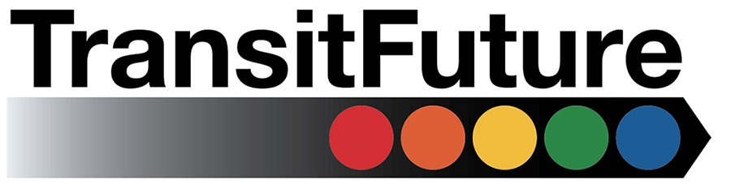

<div id="loading">
  
</div>


<div class="navbar navbar-inverse navbar-fixed-top">
  <div class="navbar-inner">
    <div class="container">
      <!-- <a class="brand" href="#"> -->
      <!-- Everything you want hidden at 940px or less, place within here -->
      <!-- .btn-navbar is used as the toggle for collapsed navbar content -->
      <a class="btn btn-navbar" data-toggle="collapse" data-target=".nav-collapse">
        <span class="icon-bar"></span>
        <span class="icon-bar"></span>
        <span class="icon-bar"></span>
      </a>
      <div class="nav-collapse collapse">
        <!-- .nav, .navbar-search, .navbar-form, etc -->
        <ul class="nav">
          <li class="navtransitfuture"><a href="#">Transit Future</a></li>
          <li class="navchicago"><a href="#">Chicago</a></li>
          <li class="navsouthsuburbs"><a href="#">South Suburbs</a></li>
          <li class="navwestsuburbs"><a href="#">West Suburbs</a></li>
          <li class="navnorthsuburbs"><a href="#">North Suburbs</a></li>
          <li class="navfunding"><a href="#">Funding</a></li>
          <li class="navsupporters"><a href="#">Supporters</a></li>
          <li class="supportbutton"><button class="btn btn-primary btn-lg" data-toggle="modal" data-target="#myModal">I support this!</button></li>
        </ul> <!-- nav -->
      </div> <!-- collapse -->
    </div> <!-- container -->
  </div> <!-- navbar-inner -->
</div> <!-- navbar -->


{% for p in site.posts %}

{% if p.url != "/index.html" %}
<div class="pagebg {{ p.pagetype }} {{ p.image }}" style="background-color:#{{ p.bgcolor }};" >
</div>
{% endif %}
{% endfor %}


<div id="page">
  <div class="sidebar">

    {% for p in site.posts %}

    <div class="sidebartitle" >

      <h1></h1>
      {% if p.title != "stats" %}
      <h2>{{ p.title }}</h2>

      {% endif %}
    </div>

    {% endfor %}

  </div>

  {% for p in site.posts %}

  {% if p.url != "/index.html" %}
  <a name="{{ p.section }}"></a>
  <div class="page {{ p.pagetype }}" style="background-color:#{{ p.bgslide }};padding-top:{{ p.extrapadding }}" data-section="nav{{ p.section }}">
    {{ p.content | markdownify }}
    <div class="clear"></div>
  </div>
  {% endif %}
  {% endfor %}

</div>

<!-- Twitter sharing stuff -->
<div class="sharebutton">
  <!-- The GitHub link
 <a href="https://github.com/jpvelez/transit-future"></a>
 <br />
 -->

  <!-- Facebook part -->
  <div id="fb-root"></div>
  <script>(function(d, s, id) {
    var js, fjs = d.getElementsByTagName(s)[0];
    if (d.getElementById(id)) return;
    js = d.createElement(s); js.id = id;
    js.src = "//connect.facebook.net/en_US/all.js#xfbml=1&appId=38481464681";
    fjs.parentNode.insertBefore(js, fjs);
  }(document, 'script', 'facebook-jssdk'));</script>

   <div class="fb-share-button" data-href="http://vision.transitfuture.org?fb" data-type="box_count" style="float: left;"></div>

    <a href="https://twitter.com/share" class="twitter-share-button" data-url="http://vision.transitfuture.org" data-count="vertical" data-text="Check out this awesome map of a new #transitfuture for Chicagoland: " style="min-height:62px;float:left;">Tweet</a>
    <script>!function(d,s,id){var js,fjs=d.getElementsByTagName(s)[0];if(!d.getElementById(id)){js=d.createElement(s);js.id=id;js.src="//platform.twitter.com/widgets.js";fjs.parentNode.insertBefore(js,fjs);}}(document,"script","twitter-wjs");</script>

</div>
